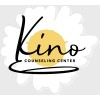

<section id="about-me" class="section aboutme">

  <div class="aboutme__container">

    <div class="card">
      

      <div class="card__body">
        Debra Legge, MPC, LAC Associate Counselor
      </div>
    </div>

    <div class="aboutme__container-text">
      <h3>About me</h3>
      <p>
        Each of us has a certain bent, perspective or predisposition on how we handle the stress, anxiety and issues the circumstances in life deals us. How we process these determines how mentally healthy we are. As we find ourselves affected negatively by such circumstances, we may struggle to know how to manage and direct this part of ourselves so that it does not negatively impact our lives but strengthens us. Life brings all sorts of situations our way that we may not know how to process in a healthy manner. This can lead to anger, anxiety, stress, or depression. Even trauma and loss are mostly out of our control but still needs processing. Life can begin to feel unmanageable or maybe just uncomfortable and we may need help working through the stages in our life. I believe it takes someone willing to connect with and listen to us and then help guide us through our own understanding and knowledge of mental health and healing. This is where I enjoy coming alongside my clients helping them to obtain the tools and wisdom to create simplicity and peace in their lives and to help heal their pain of suffering.
      </p>

      <p>
          I work together with my clients to administer treatment by using counseling modalities such as Mindfulness-Based (MBCT), Person-Centered, Strength-Based and The Three Principles-Based techniques.  Resilience is our common response to difficult life issues such as stress, anxiety, depression, trauma and loss and through resilience we can create sustainable change. I desire to support my clients through the above-referenced techniques to obtain this sustaining change for complete mental health.
      </p>

      <p>
          I am an Arizona-born native growing up in a family of 11, eight siblings, me, my mother and father. Raised in the Catholic community and grade school, this was the foundation that has given me a sense of love, belonging and the desire to be present for others. In my early teenage years my parents divorced and this affected me in ways I never knew until I was in my early 20s. At the time, I did not deal with my circumstances but instead tried to ignore the pain, only to have it surface later in much more painful ways to myself and also to others. This gave me the desire to what to learn more about human behaviors to help myself and others. I followed that desire by obtaining my Master’s in Professional Counseling and further with a Post-Master’s Certificate in Trauma-Informed Care, both at Grand Canyon University. I have four years of experience in trauma-informed care as well as my last 20 years in an administrative role for a prominent mediation firm here in Phoenix.
      </p>

      <p>
          Personally, I enjoy spending time with God, my partner, and our adult children and grandchildren. I love hiking, bicycling and reading. I value my relationships because they have been key in showing me how to love myself and others. By always putting the other’s interest ahead of our own we create a win-win experience which brings immense joy to each day.
      </p>
    </div>

    <div class="aboutme__container-experience">
      <h3>Professional History</h3>

      <div class="experience-card">
        <div class="experience-card__img">
          
        </div>
        <div class="experience-card__text">
          <span class=experience-card__header>Inpatient Therapist</span>
          <span class=experience-card__sub-header>Calvary Healing Center</span>
          <span class="experience-card__body">Mar 2018 - Present</span>
        </div>
      </div>

      <div class="experience-card">
        <div class="experience-card__img">
          
        </div>
        <div class="experience-card__text">
          <span class=experience-card__header>Licensed Associate Counselor</span>
          <span class=experience-card__sub-header>Kino Counseling Center</span>
          <span class="experience-card__body">Apr 2023 - Present</span>
        </div>
      </div>

    </div>
  </div>

</section>
